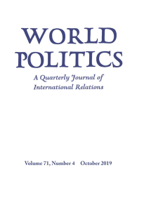
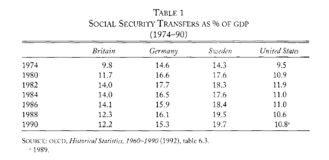
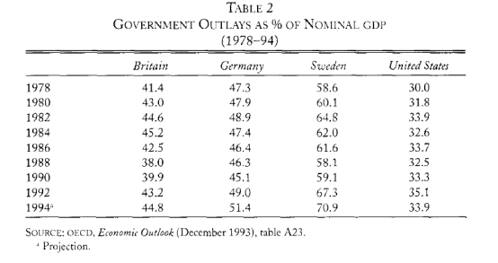
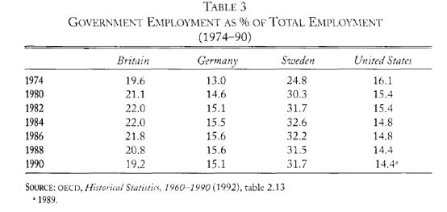
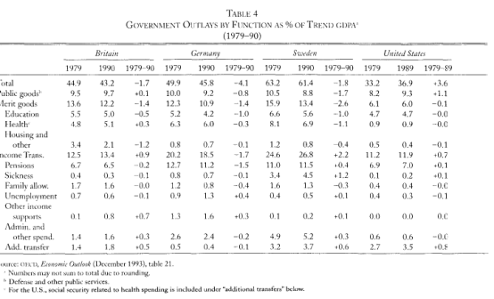

收录于合集

作品简介
【作者】 保罗·皮尔森(Paul Pierson)，加州大学伯克利分校(University of California at Berkeley) 约翰·格罗斯政治学教授。他因研究比较公共政策、政治经济学、福利国家以及美国政治发展而闻名，亦是历史制度主义流派的代表学者。其著作包括《拆散福利国家》（Dismantling the Welfare State）、《时间中的政治》（Politics in Time）等，其中《拆散福利国家》曾获美国政治科学学会卡莫尔奖(Kammerer Prize)。另外，其经典论文《回报递增、路径依赖与政治学研究》（Increasing Returns, Path Dependence, and the Study of Politics）曾获《美国政治科学评论》杂志2000年最佳文章。
【 编译】 崔宇涵（国政学人编译员，北京大学国际关系学院硕士生）
【校对】 李玉婷
【审核 】 周雨橙
** 【 排版 】** 梁鑫昱
【 来源 】 Pierson, P. (1996). The New Politics of the Welfare State. World Politics, 48 (2), 143-179. doi:10.1353/wp.1996.0004
期刊介绍

《世界政治》（ W orld Politics）创刊于1948年，是国际知名的政治学季刊。2018年其影响因子为3.368，在176个政治学刊物中排名第15，在91个国际关系刊物中排名第7。
福利国家的新政治
THE NEW POLITICS OF THE WELFARE STATE
内容提要
本文旨在为理解福利国家紧缩政策奠定基础。以往对福利国家的讨论通常本能地应用旨在解释福利国家扩张的理论，这种方式存在严重缺陷。不仅紧缩与扩张的目的大相径庭，福利国家本身也极大地改变了关于社会政策的政治斗争的局势。只有理解了成熟的社会福利计划创造新政治的方式，我们才能理解福利国家在过去20年的紧缩中表现出的非凡韧性。结合四个案例(英国、美国、德国和瑞典)的定量和定性数据，本文通过理论论证说明传统解释方法的缺陷，并强调限制或促进紧缩成功的因素。
文章导读
一、 紧缩政治为何不同 ****
作者的中心论点是，由于紧缩是一个独特的过程，它不太可能遵循在福利国家长期扩张时运行的发展规则。这基于以下两个根本原因。 首先，政策制定者的政治目标不同 ; 第二，政治 处境 发生了 重大 变化。
将福利施与大多数人和削减福利之间有深刻的区别。在战后的半个世纪里，扩大社会福利通常是一个获取政治信用的过程，是一项受欢迎的政治行为。经济变化、政治右转，以及日渐成熟的福利国家带来的成本上升，引发了越来越多削减开支的呼声。 然而，紧缩政策会给集中的选民群体带来切实的损失，换取的则是分散的、不确定的收益，因而是危险的。 由于利益受损的选民更加集中，个体参与政治行动的可能性增加了；此外，集中的利益更有可能使他们与组织网络相联系，进而了解政策如何影响其利益；这些信息网络也有助于政治行动。 其次，选民对得与失的反应方式具有明显的不对称性。 社会心理学的实验表明，人们通常表现出 负面偏好（ negativity bias ） ，在选举行为中，对候选人的负面态度与投票行为的联系更加紧密。这一效应对民选官员的约束是十分清晰的：削减社会福利计划时，集中的受益群体更有可能认识到变化并被动员起来，因为他们正在经历损失，更有可能将变化纳入他们的投票算计中。 因此，主张削减开支的人面临政策偏好与选举抱负的冲突 。
新的政治处境，即福利国家自身的发展，也创造了新的政治动力。 大型公共社会福利计划带来的密集利益集团网络以及对特定政策的强烈支持，对改革构成了相当大的障碍。 福利国家的成熟从根本上改变了利益集团政治的性质：出现了围绕社会福利计划的强大团体后，可能会使福利国家更少地依赖于最初扩大社会福利计划的政党、社会运动和劳工组织。这不仅因为福利国家创造了自己的选民群体，也与社会事业的结构有关。来自前几轮福利国家发展的“政策反馈”，也是紧缩政治的一个突出特征。
简言之，目标和处境的转换创造了一种新政治。 以避免因不受欢迎的政策而受到指责的压力为标志的新政治，决定了新的政治战略。 主张削减开支的人将试图挑拨不同受益者群体之间的关系，并推动改革，弥补政治上至关重要的群体失去的福利。同时，将试图降低改革的可见度（visibility）。只要有可能，政策制定者就会在改革问题上寻求广泛的共识。这些努力能否成功，可能在很大程度上取决于现有的政策结构。作者认为，之前关于福利国家的理论讨论未能充分考虑这一点。
二、既有理论的局限 ****
本节作者指出了传统福利国家理论解释紧缩政治的缺陷，提出以新制度主义观点，构建关于福利国家的紧缩政治的理论。
1 、新“工业主义逻辑”？
作者首先批判了从经济角度解释福利国家变迁的理论。 最早的福利国家理论认为福利国家扩张是经济发展的结果，认为“强盛的经济带来强大的福利国家”，代表学者是哈罗德·维伦斯基 (Harold Wilensky)。在当代（指20世纪90年代，编译者注）对福利国家的讨论中，经济决定论占据着主导地位。新 “工业主义逻辑”（“ logic of industrialism ”） 基于所谓的全球经济变迁建立了国家社会政策模型，这种理论认为，资本市场的全球化夺走了政府的重要政策工具，并限制了社会政策的选择。但嘉勒特（Geoff Garrett）和兰格（Peter Lange）的研究已经表明，只要税基仍足以使赤字保持在较低水平，当货币和金融政策受到限制时，转移和服务的供给侧政策并不需要被限制。
另一种观点认为，高度经济一体化带来了欧洲所谓的 “社会倾销”（ social ****dumping ） ，即在“社会工资”较低的地方经营的企业，可能会以低价迫使成本较高的企业倒闭、搬迁，或者迫使政府降低社会工资成本。在极端情况下，这可能加速社会供给（social provision）的螺旋式下降，使政府仅仅维持最低水平的福利。但是，社会工资并不是影响投资决定的唯一因素；其次，即使高社会工资的确与低迷的经济表现相关，社会政策的调整是否必要也有待检验。 总之，经济趋势不会直接导致政策结果，经济决定论忽视了政策变迁的政治因素。
2 、 左翼的权力资源与紧缩政治
权力资源的观点认为， 社会供给 的跨国差异主要由于各国内部阶级间政治资源分配的不同。 根据这一理论，强大的工会和左翼政党推动了社会福利计划的发展。 在战后的30年中，权力资源方法在解释社会供给的跨国差异方面取得了相当大的成功。基于权力资源的观点，紧缩表明福利国家陷入了严重的困境；在许多发达工业社会中，劳工组织和左翼政党的权力已大大下降。但是，几乎没有证据表明左翼权力资源的下降对福利国家产生了根本性影响。在许多国家，社会福利计划的削减幅度远比工会权力的下降幅度温和得多，与左翼权力资源的下降没有多少关联。
福利国家的新政治在处境和目标上的转变有助于解释上述现象。作者认为，分析当代福利国家的支持者，不仅要包括有组织的工人和左翼政党，更要包括单个项目中更多样化的支持者。与特定社会政策相联系的利益集团是重要的政治角色，而这些利益集团的崛起，表明了以往政治选择的政策反馈（policy feedback）对当前政治斗争的影响。即便福利项目的受益者没有被充分组织起来，政客们必须考虑他们的关切。削减开支可能会激怒选民，后者会用选票惩罚前者；因此，即使没有持续有组织的活动，具有被动员潜力的选民也会影响决策者。
作者认为，权力资源理论的解释力下降表明福利国家业已成熟，削减开支并不是福利国家扩张的简单逆转。 由于削减项目不受欢迎，即使工会和左翼政党力量薄弱，政客们也会踌躇不前。同时，成熟的社会福利计划发展了新的、有组织的支持基础，这些基础在很大程度上独立于工人运动 ；因此，有组织的工人的式微不一定会自动导致福利国家的相应削弱。
3 、新制度主义与福利国家政治
作者认为，新制度主义观点可以更好地解释福利国家的新政治。 政治科学中“新制度主义”的复兴反映了对相对稳定的、程序化的安排如何构建政治行为的重新认识。制度为政治斗争确立了游戏规则——影响群体身份、政策偏好和联盟选择，影响群体讨价还价的能力。制度还会影响政府的能力——制定政策所需的行政和财政资源。
（新）制度主义者对福利国家的发展提出了两个宽泛的主张。 首先，强大的国家很可能产生强大的福利国家，而国家的力量取决于政府的行政能力和制度的凝聚力。 广泛的行政和财政资源使建立广泛的社会政策变得更加容易。在政治权力分散的国家，少数群体往往会阻碍社会立法，联邦制、分权制度、两院制或依赖公民投票都可能限制福利国家的发展。 其次，先前实施的福利国家项目具有政策反馈效应。 关于政策反馈的争论，本质上是对大政府的后果的争论，而福利国家是大政府的核心。因此，对福利国家的研究能够产生关于政策反馈的最有力论述。
作者指出，既有的政策结构对福利国家政治可能产生多种影响。福利国家结构会影响各种社会群体的规模、态度以及利益集团的形成方式；社会福利计划可以为社会学习过程提供基础，从而影响项目扩展的前景；政策可以创造长期承诺，将政策发展“锁定”（lock in）在特定路径。
现代福利国家所及的范围之广表明，有关政策反馈的制度主义论点更适宜解释紧缩政策。 而运用政策反馈论证紧缩，有两种不同的方法。 第一种方法是，强调个别项目的特征及其对成功的紧缩的影响。 另一种选择是，论证特定福利国家制度的总体结构，表明它们可能会促进特定类型的政治。 第二种方法更易于应用于跨国比较，例如艾斯平-安德森（Costa Esping- Andersen）就提出了一种命题，将福利国家结构与跨国职业结构的差异连接起来，再进一步与当代政治裂隙（political cleavages）联系起来。
新制度主义观点有助于理解福利国家政治；此外，也没有理由认为制度结构和以往政策选择的影响已经减弱。 但是作者也提醒道， 必须 将这些论述予以 重新调整，以适用于紧缩政治特有的具体 环境 和战略问题。
4 、从扩张理论到紧缩理论
在比较社会政策领域最重要的研究中，可以明显地看出其假定扩张和收缩的相似性。在胡贝尔（Evelyne Huber）、拉金（Charles Ragin）以及斯蒂芬斯（John D. Stephens）对1956年至1988年间的福利国家的复杂定量研究中，时间序列模型假定“因果过程随着时间推移是一致的。” 艾斯平- 安德森也认为，“一个试图解释福利国家增长的理论也应该能够理解它的紧缩或衰退”。但作者指出，紧缩并不仅仅是福利国家扩张的镜像过程，需要对福利国家扩张的理论进行重大修正。下一节中，作者将运用英国、美国、德国和瑞典四个国家的案例来说明紧缩政治的特殊性。在福利国家扩张时期的关键因素——如劳工组织的作用——重要性正在下降；其他方面，例如政治制度的设计，仍然具有重要意义，但影响方式有所不同；同时，关键的新兴因素是成熟的福利国家本身，以及它广泛而深厚的公众支持。
三、 四个国家的紧缩政治
本节中，作者回顾了自上世纪70年代末以来，英国、美国、德国和瑞典四个富裕民主国家福利制度的演变，来解释福利国家的紧缩政治。这些案例说明： (1) ****几乎没有证据表明，强国家或左翼 权力资源 与紧缩政策的结果有关 。 (2) 由于紧缩政策不受欢迎，因此除非在预算危机的情况下， 才可能 进行大规模的削减， 而 即使在这种情况下，也不太可能进行彻底的结构调整。 (3) 出于同样的原因，各国政府通常寻求协商一致的一揽子方案，而不是单方面实施改革，这将进一步减少彻底改革的可能性。 (4) 削减开支不会形成一种自我强化的 动力 ，反而 是增加了 对福利国家的支持。
在对紧缩的测量上，作者认为仅仅依靠定量指标不够充分：首先，纯粹的支出水平很少是福利国家在政治上最重要或理论上最有趣的方面。其次，支出估算将无法反映旨在间接或长期实施紧缩的改革影响。 因此，作者的研究结合了关于支出的定量数据和对福利国家改革的定性分析 ， 并 把重点放在表明福利国家结构转变的改革上。
量化的证据表明，四个福利国家都未曾经历大幅削减。从1974年到1990年，四个案例国家的支出模式非常相似。 如表 1和表2所示，在大部分 时段内 ，社会保障支出和政府总支出占 GDP的比例相对 稳定 。 表 3则显示，没有国家急剧地缩减了公共部门的规模。 表 4 提供了上述国家社会福利支出变化的更多分类指标，包括经合组织定义的“有益品”（ merit ****goods ）和多种收入 转移指标。 尽管四国的变化有一定差异，但任何一个次级指标均未经历重大变化。




定量数据显示出高水平的连续性和稳定性。但作者指出，需要谨慎地对待这些数据，对四个案例进行更详细的调查。
1 、英国
至20世纪70年代中期，英国已经成为中等规模的福利国家，包括适当的收入转移计划以及医疗和住房方面相对广泛的干涉政策。过去15年（指1979年至90年代中期，编译者注）保守党统治时期是对既有紧缩理论的有力检验。在经合组织国家中，很少有国家如英国一般在权力资源分配方面出现如此激进的右倾：平衡的两党制让位于保守党独大的格局；面对高失业率和劳资关系法的改变，劳工运动屡遭失败，工会的密度也急剧下降。此外，英国的威斯敏斯特政治制度集中了政治权力。如果简单地按照福利国家扩张的论点解释，英国本应大幅削减社会福利政策。经验证据则并非如此：在英国，福利国家依然完整无损。
作者以两个成功的紧缩政策案例入手。撒切尔政府的 住房改革 是一个独特且受欢迎的紧缩案例，因为大量公共部门资产的清算为购房者和纳税人带来了可观的好处。政府的 养老金改革 也相对成功，政府虽然实质上削减了“与收入相关的国民养老金项目”（SERPS），但是其渐进的和看似技术性的改革限制了反对派的出现。 上述案例中，撒切尔政府的成功得益于较弱的制度 化程度（ SERPS的案 例）或者难得的争取政治信用的机会（住房改革的案例）。 但总体而言，福利国家是一个政治雷区，英国民众对社会福利支出的支持依然强烈 。 因此，尽管保守党政府对福利国家抱有敌意，并拥有实施重大变革的政治权威，但它担心自己会因为不受欢迎的举措而被追责。 ****保守党激进的削减努力不仅失败了，且往往付出了相当大的政治代价。此外，有人认为推行紧缩政策最终导致了撒切尔的下台。极其不受欢迎的人头税—— 旨在削减地方政府的财政支出，从而削弱地方政府的社会支出——是民意调查恶性循环的主要来源，最终迫使撒切尔辞职。她的继任者约翰·梅杰(John Major)采取了更为温和的路线。
部分保守党执政的记录表明，大幅削减开支并非不可能。当一个政府能够模糊改革的后果，或者将改革转变为切实利益的来源时，福利国家可能是脆弱的。然而，政府的记录揭示了更多的渐进调整或重组计划失败的案例，这一结果与撒切尔政府在其他政策领域取得的显著成功形成了鲜明对比，比如对英国劳资关系体系的全面改革，以及对国有产业的私有化。
2 、美国
美国也被认为很可能废除福利国家。与英国相似，美国在20世纪80年代经历了权力资源转向右翼的重大转变，共和党在1980年赢得了总统选举。联邦的权力似乎在继续衰落。鉴于美国福利国家的范围相当有限，很多人认为公众对维持福利国家的支持将微不足道。 然而 在美国 ，主张 紧缩 的人 是 在政治权力严重分散的 处境 下行事的。 虚弱的政党 、 分权体制以及 联邦制 共同 创造了 美国实行紧缩政策的 制度环境 。
至少到1994年，美国面临与英国相同的情况。只有在执政的第一年，里根政府对某些社会福利计划，如对有子女家庭补助计划（AFDC）和失业保险的削减是成功的。 但是，同其他国家一样，民众对紧缩的支持迅速消失，里根政府 进一步的 预算削减 被压倒性地否决。 ****到里根的第二个任期，各种针对穷人的社会福利计划又重新被提上议程，国会批准了食品券和医疗补助的适度增长，以及大幅增加对贫困工薪家庭的劳动所得税抵免。在对社会保险和联邦医疗保险的改革中，由于担心缩减开支会给选举带来不良后果，在没有两党达成协议的情况下，共和党人拒绝采取进一步行动；对共识的需要反过来又保证了改革将被民主党内部的项目支持者所接受。
尽管人们普遍认为，福利国家在美国的政治基础很小，但对福利国家的反对仅仅是短暂的。从1982年开始，民众对福利国家的支持与日俱增。随着民众对削减开支的热情消退，里根变得更加犹豫不决。同时，美国政治制度的碎片化也保证了国会会强烈反对进一步削减开支的计划。
由于20世纪80年代出现了巨大的结构性预算赤字和对增税的抵制，社会福利政策的扩展空间已所剩无几，美国的福利国家进入了“零和”时代，主要在停滞增长的预算内重新分配资源。1994年的选举结束了民主党在国会的主导地位，对美国的福利制度提出了空前有力的挑战；但是美国以及其他国家的经验都让人怀疑，公众是否能够容忍大幅削减社会福利的项目。
3 、德国
和瑞典一样，德国有非常广泛的福利制度。与英国和美国一样，德国在紧缩时期的选举中也出现相当大的右倾。然而，在联邦参议院占多数的社会民主党具有相当大的影响力；此外，与其他国家的工会相比，德国工会的组织力量相当强大。 因此，德国 是 一个左翼权力资源 下降幅度温和 、政治权威相对分散的 案例 。
德国的福利国家不是建立在就业最大化的基础上，而是建立在向“局外人”提供补贴的基础上，鼓励他们把劳动力市场留给那些生产效率更高的人。德国面临的财政压力显而易见，主要来自于人口结构的变化。到目前为止，最主要也是最昂贵的“局外人”群体是由提前领养老金的人和提前退休的人组成。代际政治裂隙的发展存在着巨大的障碍。
但是，上世纪80年代末的养老金改革非但没有暴露出新的政治分歧，反而符合普遍的跨国模式。即使人们意识到了长期赤字的风险，并普遍认识到需要进行养恤金改革，科尔政府却在专家和社会伙伴之间寻求共识，并急切地寻求反对派社会民主党的支持。工会和企业代表提交了关于养老金改革的联合声明。除绿党外，所有的政党都支持1989年11月通过的养老金改革法案。因此，尽管1989年以前削减福利的保守主义倾向十分明显，但这并没有推翻社会福利政策是在一个相对一致的框架内运作的基本现实。统一后时期的紧张局势增加了进行更大幅度改革的可能性。德国不断恶化的财政状况，加上对工业竞争力的担忧，引发了人们对福利国家越来越多的批评。然而，德国的紧缩模式只是再次削减了福利水平，而没有挑战社会福利计划的基本结构。
德国政府在控制支出方面相当成功。然而，这是一个“平稳整合”的时期，从根本上重新考虑社会福利政策似乎遥不可及。 政治制度的结构 ——包括宪法规则和社团政策网络——强调共识。
4 、瑞典
瑞典拥有极为成功的社会民主党、强大的工会，是世界上最广泛、最具再分配性的福利国家；同英国一样，瑞典的政治权威相当集中。
作者将瑞典社会政策的演变分为两个阶段进行分析。1990年以前，瑞典展现出与其他国家共有的周期性模式。1990至1994年，则是瑞典的经济和预算环境急剧恶化的时期。根据艾斯平- 安德森的论述，瑞典福利国家结构带来的公共和私营部门工人的分裂，会导致紧缩的前景。1990-1994年瑞典经济的低迷加剧了这种紧张局势：1990年后的财政危机使瑞典亟待广泛的改革；在1991年至1994年间，瑞典由一个右翼资产阶级联盟统治。然而，福利国家并没有得到根本的重建，瑞典政府在现有福利项目的结构中操作相当谨慎。具有讽刺意味的是，瑞典经济模式其他部分的崩溃，也分散了公共部门和私营部门工人之间的部分压力；因此，虽然经济问题给福利国家带来了额外的压力，但它们是以一种鼓励更加分散和渐进的紧缩政策的方式，而不是在公共部门和私营部门工人之间形成两极分化的局面。
瑞典的资产阶级联盟非但没有利用选举胜利和预算危机作为改造福利国家的黄金机会，反而选择了一条谨慎的道路。 在整个过程中，联合政府刻意避免采取可能被指控为试图废除福利国家，且会让人相信它的举措。 1994年10月的选举在某种程度上也暴露出，即使是对社会福利计划的温和攻击，也是不受欢迎的。
四、 福利国家的新政治 ****
经济、政治和社会压力似乎使福利国家陷入困难重重的局面。然而，如果审视一下实际政策，就发现上述压力并没有导致福利国家的根本性转变。自1973年起，严酷的经济环境无疑产生了限制支出的需求； 然而与许多改革者的愿望， 或者与 劳资关系政策、宏观经济政策或公共 产业 私有化等领域的变化程度相比，福利制度的相对稳定 十分突出。
作者认为，民主政治制度的普遍保守性是福利国家的第一个保护伞 。福利国家现在代表着现状，拥有这种状态所赋予的所有政治优势。 其次，紧缩政策通常会带来高昂的选举成本 ，社会福利的受益者比较集中且一般组织良好，他们更有可能因为削减开支而惩罚政客。在糟糕的经济表现和预算压力发生后，民意调查中反复出现的模式是首先轻微地反对福利国家，然后在第一次出现大幅削减的迹象时，对福利国家的支持度就会回升。
同时作者指出，先前 社会 福利 支出的增长 改变 了福利国家政治的格局 。 成熟的社会福利计划产生了新的有组织的利益集团，即社会服务的消费者和提供者，他们通常处于保卫福利国家的有利地位。在另一种意义上，与成熟的福利国家项目相关的网络也构成了彻底变革的障碍。 关于路径依赖的研究表明，某些发展过程一旦开始就很难逆转。 组织和个人适应特定的安排并作出承诺，可能使改变的成本 远远高 于延续现有安排 的成本 ，并锁定了 政策制定者 的选择 。
最后，作者提出了对福利国家的紧缩（政治）的一般概述和分析：
首先，当出现重大的选举松弛（ electoral slack ），即各国政府认为它们有足够的能力来承受不受欢迎的决定所造成的选举后果时，可能会促进彻底的紧缩。 因此，撒切尔改革的相对成功可能可以用其反对者的分化来解释。然而，提前计算选举结果是一件棘手的事情，大多数政府可能会谨慎行事。即使是撒切尔政府，在面对广泛的反对时通常也会退却。
其次，预算危机可能为改革提供机会。 主张削减开支的人将试图利用这样的时机，以挽救福利国家的姿态实施改革，让政府避免受到广泛指责。然而，要使危机的说法可信，通常需要与政治反对派合作，对协商一致的需要使改革者难以利用危机来促进彻底的结构调整。
第三，紧缩倡导者成功与否，将取决于降低改革可见度（ visibility ）的机会。 ****作者认为，能否成功地降低改革可见度在一定程度上取决于政治制度的设计。在权力集中的国家（如英国和瑞典），政府很难避免因不受欢迎的决定而受到指责，但会有更强的能力来制定和实施削减战略，克服阻碍；在权力分散的体系中，政府必须制定策略，最大限度地减少通过制度否决点 （veto points）强力改变政策。
最后，改变制度（ 游戏规则 ） 的前景很重要 。如果主张削减开支的人能够调整税收、支出和赤字之间的权衡、评估和决定的方式，他们或许能够改变政治权力的平衡。在欧洲，欧共体日益增长的政策重要性可能会改变福利国家斗争的格局。在美国，国会中新的共和党多数派直到改变了游戏规则之后，才开始削减项目。
上述所有假设都建立在本文的核心论点之上 ： 对 福利国家的正面攻击会带来巨大的选举风险。 福利国家的当代政治是逃避 指责 的政治 。 福利国家仍是战后政治经济中最有弹性的方面。
历史制度主义的分析应该强调，社会政策变化是一个随时间推移而展开的过程。 福利国家的发展改变了社会政策的政治。 从历史的角度来看，当今的政策制定者所处的环境，根本上是由过去遗留下来的政策所塑造的，而非当前的政治将会重现上一个时代的冲突。
_ ** _ ** _ ** _ 本文由国政学人独家编译推荐，文章观点不代表本平台观点，转载请联系授权。**__ 扫下方二维码查看往期精彩
【媒体国关】媒体变迁中的国关转向：国关文献中的新媒体研究现状 | 国政学人 第298期
【理论研究】权力、结构性权力与美国的衰落丨国政学人 第299期
【方法论衡】戴维·辛格：国际关系中的层次分析问题丨国政学人 第300期
【政策评论】信誉之后：川普时代的美国外交政策丨国政学人 第301期
【霸权研究】大国竞争战略中的经济遏制丨国政学人
第302期
【新刊速递】第10期 | International Studies Review, Volume.21, No.3, 2019
【新刊速递】第11期 | Cooperation and Conflict, Vol. 54, No. 4, 2019
【新刊速递】第12期 | International Affairs, Vol.95, No.6，2019
【新刊速递】第13期|Chinese Journal of International Politics, No.4, 2019
分类导览 1
分类导览 2

点“在看”给我一朵小黄花